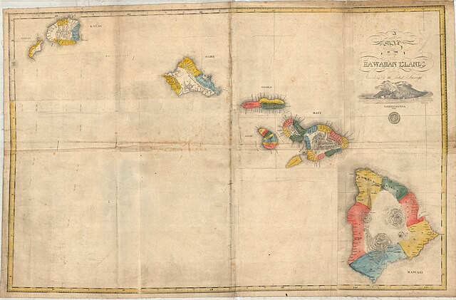
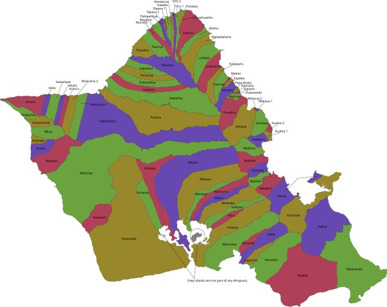
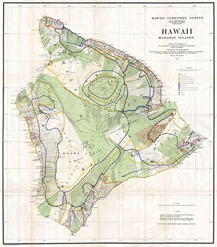
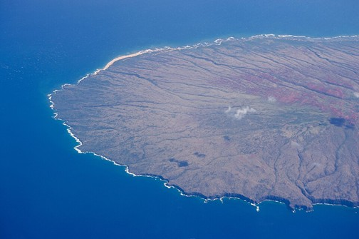
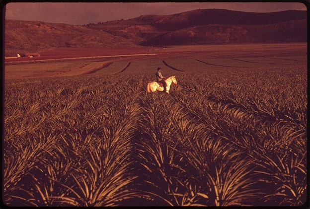
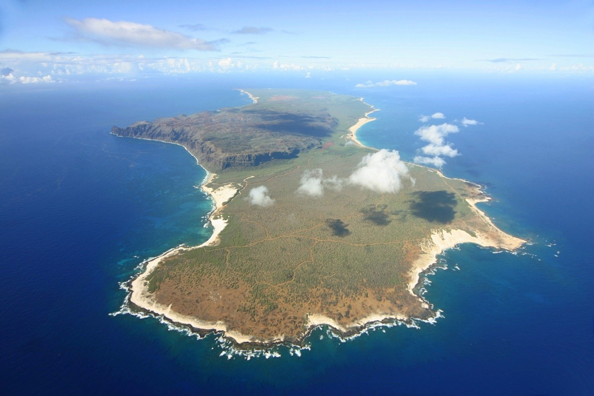
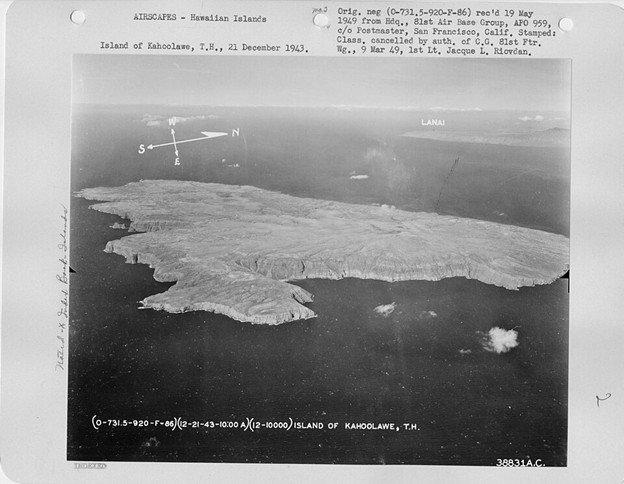

How Does One Own an Island?
Across the world, wealthy individuals have purchased small islands as private retreats. Richard Branson owns Necker Island in the British Virgin Islands. Dozens of smaller islands in the Caribbean, Mediterranean, and South Pacific have passed into private hands. The idea of owning an island itself sounds bizarre but we have, in some regard, become desensitized to it and it isn’t particularly shocking anymore to hear about.
But Hawaiʻi’s story is different.

At one point in the nineteenth century, three of the nine major Hawaiian Islands were controlled almost in their entirety by a single owner or authority.
Lānaʻi.
Niʻihau.
Kahoʻolawe.
Not smaller offshore islets.
Entire islands. The smallest of which, Kahoʻolawe, is roughly 29,000 acres. Islands where people lived, raised families, and built communities. Each one shaped by decisions made for it as a single unit.
In some cases, that meant private ownership.
In others, it meant control.
Together they represent roughly one-third of the major islands in the Hawaiian chain, a startling concentration of land under private control. Each island followed a different path to that outcome, but the forces behind those paths were deeply connected.
Geography played a role. All three islands sit in the rain shadow of larger neighbors and struggle with reliable fresh water. Their dry landscapes supported smaller populations, where agriculture and fresh water access was (and still is today) challenging to manage.
History played a role as well. Each island carried its own stories: legends, warfare, and depopulation on Lānaʻi, chronic water scarcity on Kahoʻolawe, and the isolated conditions that shaped life on Niʻihau.
The Hawaiian Kingdom fundamentally changed the relationship between people and land in the mid-nineteenth century (1845-1850) through a series of reforms known as the Great Māhele. Those reforms introduced a system that allowed land to be divided, surveyed, transferred, and eventually sold.
Once that system existed, the stage was set for something that would have been unthinkable in earlier centuries: the transfer of entire islands into private ownership, even to individuals who were not royalty and not indigenous to the islands.
To understand how that happened, we need to step back into the world before the Māhele, when land in Hawaiʻi functioned very differently.
Before the Māhele, land in Hawaiʻi was not something that could be bought, sold, or otherwise owned in the modern sense.
Land functioned within a system of stewardship and responsibility overseen by the aliʻi, the ruling chiefs of the islands. Authority flowed downward from the mō‘ī, the king, through high-ranking aliʻi, district chiefs, and local konohiki who managed land divisions known as ahupuaʻa. Typically, these were long wedges of land stretching from the mountains to the sea, designed to give communities access to forests, fresh water, farmland, and fishing grounds.

Commoners, the makaʻāinana, lived and worked within these ahupuaʻa. They farmed kalo in irrigated valleys, cultivated dryland crops where conditions allowed, and fished along the coast. In exchange, they owed labor, tribute, and would fight on behalf of the chiefs who oversaw the land.
Land was tied to responsibility, not possession. Chiefs managed it, people lived from it, and both were bound by obligations to each other, and to the gods, to preserve social order.
What the system did not allow was selling or gifting of land. It was not a commodity.
A chief could control land, administer it, or lose it through political change, but he could not sell it. Land was embedded in genealogy, governance, and the spiritual relationship between people and place. The idea that an entire island might permanently pass into the hands of a private individual did not make sense in pre-Māhele times.
But by the 1840s, Hawaiʻi was changing rapidly.
Foreign ships were arriving in growing numbers. Western merchants, missionaries, and diplomats were pushing the Kingdom to adopt legal systems they recognized. The monarchy, in an effort to strengthen its position internationally, sought to resemble other recognized nations with formal laws, treaties, and defined institutions of government. In many ways, Hawaiʻi succeeded in doing so.
Land tenure, however, remained one of the most pressing issues.
Without clearly defined ownership, foreigners argued, property rights were uncertain and investment was risky.
Hawaiian leaders faced a difficult choice. They could maintain the traditional system and risk foreign powers claiming Hawaiʻi was legally backward and therefore required foreign intervention. Or they could adapt the Kingdom’s laws to resemble Western property systems in hopes of protecting Hawaiian sovereignty.
King Kamehameha III, Kauikeaouli, chose the second path.
The Māhele, meaning “division,” was designed to transform a system based on chiefly stewardship into one based on legally recognized property rights.
In 1848, the king and leading chiefs began formally dividing the lands of the kingdom between themselves. This initial division created three land classifications.
Crown Lands, reserved for the monarch and intended to support the office of the king.
Government Lands, held by the kingdom itself to support public administration.
Konohiki Lands, granted to the chiefs who had traditionally overseen large land divisions.
For the first time, these lands were recorded, surveyed, and documented within a Western-style legal framework. Chiefs who had once administered land through status and responsibility now received legal, transferable title to specific tracts.
The Māhele also included provisions for commoners.
Through the Kuleana Act of 1850, makaʻāinana were allowed to claim small parcels of land (within the existing three classifications) where they lived and farmed. In theory, this ensured that the people who had long worked the land could retain a portion of it.
The process proved difficult. Claims required surveys, written petitions, and formal recognition through a legal system that many Hawaiians didn’t understand. The vast majority of land remained in the hands of the crown, the government, and the aliʻi.
Another change followed soon after.
Also in 1850, the Hawaiian Kingdom legalized the sale of land to foreigners.
What had begun as a reform meant to stabilize Hawaiian sovereignty now opened the door to something new. Land could be bought, transferred, consolidated, and accumulated. This shift was a major catalyst for economic development, especially in agriculture and water infrastructure.

In certain, rare cases, an entire island could be purchased.
Most of the islands remained far too large and valuable to pass easily into private hands. Oʻahu, Maui, Moloka‘i, Kaua‘i and Hawaiʻi Island supported large populations and extensive agriculture. Their lands were divided among many chiefs, communities, and government holdings.
A few islands, however, were different.
Dry.
Sparsely populated.
Difficult to cultivate.
And far easier to acquire en masse.
Lānaʻi
Lānaʻi was never an easy place to live.
It carried a reputation that set it apart. In Hawaiian moʻolelo, Lānaʻi was once known as a place of spirits, where hostile forces made settlement difficult. The island’s population fluctuated over time, shaped not just by environment, but by conflict.
One of the most significant events came during the late 18th century. After a defeat at the hands of Kahekili II at the Battle of Kalaeokaʻīlio (near Kaupō, Maui), forces aligned with Kalaniʻōpuʻu (including his nephew, Kamehameha) launched retaliatory raids on Lānaʻi. Many of the island’s inhabitants were killed. Food systems were depleted and agricultural networks destroyed. What remained was an island with limited water, fewer people, and less agricultural potential.
Records from Captain Cook’s third voyage note that populations were significant on Kauaʻi and Hawaiʻi, but far smaller on Lānaʻi. Captain George Vancouver later noted that he bypassed the island due to the lack of settlements and visible population.
Geography played the most decisive role.
Lānaʻi sits in the rain shadow of Maui, leaving much of the island dry and dependent on inconsistent water sources. Large-scale agriculture that could support large populations was difficult to sustain. At its height, the population is estimated to have been around 6,000. By 1838, it had declined to roughly 1,200.

By the mid-19th century, those conditions made it uniquely vulnerable to consolidation.
After the Māhele, land on Lānaʻi was gradually assembled into large holdings. The Mormons arrived in the mid-1850s and leased a large tract of land. Not long after, a Mormon leader, Walter Murray Gibson, purchased the vast majority of Lānaʻi using Mormon funds, but registered the land in his own name.
He was later excommunicated for a variety of reasons, most notably the misuse of church funds. Over the following decades, Gibson consolidated control. By his death in 1888, most of Lānaʻi was in his possession. His heirs inherited roughly 90% of the island, along with a substantial ranching operation that included thousands of sheep, goats, and horses.
Ownership changed hands several times in the following decades, with ranching operations shifting from sheep to cattle as conditions and markets evolved.
But Lānaʻi’s defining transformation came in the early 20th century, when James Dole acquired nearly the entire island (from the Baldwin family of Maui) and turned it into the world’s largest pineapple plantation.

Lānaʻi was not just privately owned. It was functionally a company-run island. Developed, built, mapped, and named by a single owner.
Today, the island has entered another phase. Purchased by Larry Ellison in 2012 (from David Murdock), much of Lānaʻi remains under single ownership, continuing a pattern that began in the decades following the Māhele. The trajectory has shifted again. Today, the island is centered on luxury tourism. A far cry from traditional farming, sheep and cattle ranching, and pineapple. Eras and industries that no longer appealed to the island’s current owner.
An island shaped by isolation, scarcity, and history became one of the clearest examples of how land reform could change the landscape, the people, everything about an island.
Niʻihau
Niʻihau followed a very different path.
It is dry, isolated, and sits in the rain shadow of Kauaʻi. Fresh water has always been limited. Agriculture was possible, but never on the scale seen on Hawaiʻi Island or Maui. The population peaked around 1853 at roughly 800 people and has gradually declined to about 75 today. The island developed a reputation for its remoteness and isolation.
Those same characteristics that limited growth would later make Niʻihau uniquely suited for consolidation.
Niʻihau had fewer competing claims, less agricultural value, and a smaller population than the major islands. It could be transferred almost entirely as a single unit in a way that places like Oʻahu or Maui could not.
In 1864, King Kamehameha V sold the vast majority of the island (and parts of Kaua‘i) to Elizabeth Sinclair, a Scottish-born plantation owner arriving from New Zealand, for $10,000 in gold.
The decision reflected both the new legal framework created by the Māhele and Niʻihau’s unique conditions.
At the time of the agreement, Kamehameha IV is said to have remarked, “Niʻihau is yours… But the day may come when Hawaiians are not as strong in Hawaiʻi as they are now. When that day comes, please do what you can to help them.” (While Kamehameha IV supported the transaction, it was completed under Kamehameha V).
The island passed to the Robinson family, Sinclair’s descendants, who continue to own Niʻihau today.
Unlike Lānaʻi, Niʻihau was never transformed into a large-scale plantation economy. Ranching became the primary activity, supplemented by small-scale agriculture and the harvesting of shells.
But the defining feature of Niʻihau was access, or lack thereof.

Access to the island became tightly controlled. For much of its modern history, Niʻihau has been closed to outside visitors, with entry limited to residents, invited guests, and those with permission. The island developed a reputation as the “Forbidden Island,” a place where Hawaiian language and traditions persisted.
Over time, the Robinson family established strict rules governing life on the island. These reportedly included bans on alcohol and cigarettes, restrictions on speaking to the media, limits on extended absences, and expectations around personal appearance.
It led to something else. Control.
An island shaped by scarcity and isolation became one of the most enduring examples of private ownership in Hawaiʻi through the restriction of access.
Kahoʻolawe
Kahoʻolawe was always the most difficult of the three. Unlike Lānaʻi and Niʻihau, it was never fully privately owned. It was still controlled, managed, leased, and ultimately shaped by decisions made for it as a single unit. The most consequential of those decisions were made by outsiders.
Smaller, lower in elevation, and sitting in the deep rain shadow of Haleakalā, the island struggled with one problem more than any other: water. Fresh water sources were scarce and unreliable. Without consistent rainfall or streams, large-scale agriculture was never sustainable. The island supported small populations, but its growth was always constrained by its environment.
Much like Lānaʻi, Kahoʻolawe’s villages were destroyed by Kalaniʻōpuʻu’s forces during the broader conflict with Kahekili II.
Even before the Māhele, Kahoʻolawe was already being used in ways that reflected its limitations.
Kamehameha III turned the island into a men’s penal colony in the 1830s. Food and water were so scarce that some prisoners starved, while others attempted to swim to Maui in search of food.
After the Māhele, Kahoʻolawe remained government land and was leased several times for ranching. Most efforts struggled due to water limitations and poor vegetation.
From 1918 to 1953, the Territory of Hawaiʻi leased the island to Angus MacPhee and Harry Baldwin. By the 1930s, the operation saw moderate success following aggressive goat culling and the construction of water retention systems.
During World War II, the United States military took control of the island and began using it as a training ground. Bombing exercises, artillery testing, and live-fire drills became routine. What had already been an environmentally fragile island was transformed into something else entirely.
A target.

For decades, the bombing continued. The land was scarred, unexploded ordnance scattered across its surface, and access to the island was almost entirely restricted.
Beginning in the 1970s, a growing movement of Native Hawaiian activists challenged the military’s use of the island. Their efforts reframed Kahoʻolawe not as expendable land, but as a place of cultural and spiritual importance. After years of protest and legal action, the bombing stopped. In 1994, the island was transferred back to the State of Hawaiʻi, to be held in trust for future restoration and eventual return to a sovereign Hawaiian entity.
Today, Kahoʻolawe remains uninhabited.
Restoration efforts continue, but the damage, both environmental and cultural, is still visible and extensive.
An island once limited by nature became one reshaped by deliberate human destruction.
Owning an island is not as unusual as it once sounded.
But controlling one, shaping its economy, its people, its access, its landscape, and ultimately its future, is something else entirely.
In Hawaiʻi, that control took different forms.
On Lānaʻi, it meant transformation. It was molded into a ranch, then retooled into a plantation, then reimagined again for luxury and exclusivity.
On Niʻihau, it meant restriction. A closed island where access was limited and a way of life preserved under private, strict authority.
On Kahoʻolawe, it meant something far more destructive. An island used, damaged, and only later reclaimed through activism and restoration.
Each followed a different path, but all were made possible by the same shift: a moment when land in Hawaiʻi became something that could be divided, transferred, and consolidated.
The Great Māhele did not intend to create privately controlled islands.
But it made them possible.
And once that possibility existed, geography, economics, and circumstance did the rest.
Three islands.
Three outcomes.
And one lingering question.
Not just how one owns an island.
But what it means to dominate one.